用“潜在思考”做推理：循环 Transformer 的能力
Reasoning with Latent Thoughts: On the Power of Looped Transformers
论文没有发布官方代码或模型权重（截至 2026-10-19 未找到）。阅读状态、进度与收藏只保存在你的浏览器里。
逐节精读
这部分按论文的章节顺序，用本站自己的话把整篇论文从头讲一遍，附录里的实验细节、逐任务分数和证明思路也放进了对应的小节。读懂某个概念需要的背景知识，会在第一次用到它之前单独讲清楚（青色框）。每个结论都尽量说出“因为什么、所以什么”。这篇论文以 CC BY 4.0 许可发布，所以原图直接放在讲到它的地方，并说明这张图怎么看；原图没有画到的概念，用本站的示意图补上。标“推算”的数字是本站根据论文数据算出来的，不是论文原话。每节末尾有英文原文的链接。
0 导读：这篇论文解决什么问题
过去几年，大语言模型在数学、代码和逻辑题上的进步，大多被归功于“模型更大”。缩放定律总结的规律也是这样：模型的表现主要由参数量和训练数据量决定，层数和宽度怎么搭配，影响要小得多。不过 Ye 等人（2024，“语言模型物理学”系列）在合成数学题上发现，参数量相同时，更深更窄的模型推理明显更好。这在直觉上说得通：推理题要一步接一步地推，而 Transformer 的每一层只能做有限的一点组合，层数就是模型在一次前向计算里能“连续想几步”的上限。
这篇论文更进一步：如果推理真正需要的是深度，那它也许并不需要那么多参数。办法是循环：只造 \(k\) 层，把这 \(k\) 层当成一个整体重复执行 \(L\) 次。数据一共流经 \(kL\) 层，参数却只有 \(k\) 层那么多。论文用 \((k\otimes L)\) 表示这种模型。作者先在三个合成推理任务上发现，\((k\otimes L)\) 几乎追平了真正有 \(kL\) 层的模型，并且远好于只有 \(k\) 层的模型。接着在 1B 参数、250B token 的语言模型预训练中发现，和计算量相同的深模型比，循环模型的困惑度和“背知识”类任务明显更差，但在需要从上下文推理的任务上差得少得多，在一组合成的推理基元任务上甚至反超。作者还证明了几条理论结果：循环模型用接近最优的深度就能完成群元素连乘、多跳归纳这类迭代任务；\(T\) 次循环可以模拟 \(T\) 步思维链（CoT），所以循环的中间状态可以看成“潜在的思考”。最后，他们把“像循环”做成一个正则项加到普通模型上，在困惑度不变的情况下提高了推理类分数。
读这篇论文时要一直记着一件事：循环省下的是参数，不是计算。\((k\otimes L)\) 处理每个 token 的计算量和 \(kL\) 层的模型一样多。论文里“循环模型追平了深模型”是在计算量相同、参数更少的条件下说的；“循环模型远好于浅模型”是在参数相同、循环模型却多花了 \(L\) 倍计算的条件下说的。本页会在每个结果旁边说清楚它比的是什么。
读完这部分，你应该能回答这几个问题：
- \((k\otimes L)\)、有效深度、iso-param 基线和 iso-FLOP 基线分别是什么？三者的参数、计算量和 KV 缓存怎么比？
- n 元加法、p 跳归纳、i-GSM 三个任务为什么需要深度？循环模型在上面的表现说明了什么？
- “% Gap”怎么算？表 3 里 282% 这样的数字该怎么读？
- 在同样的计算量下，循环语言模型输在哪里、赢在哪里？“偏向推理的归纳偏置”这个说法有多可靠？
- 中间循环和循环式正则是什么，各自换来了什么？
- “循环模型能模拟 \(T\) 步 CoT”这个定理说了什么、没说什么？它和推理时扩展是什么关系？
- 后来的 Huginn、Ouro、Iso-Depth、Parcae 怎样推进或检验了这些结论？
1 引言：推理要的是深度，不一定是参数
Transformer 由一层层结构相同的块堆起来。每一层包含一个注意力子层和一个前馈（MLP）子层，两者都带残差连接：子层算出一个修正量，再加回原来的输入上。一个 token 的向量表示从第一层流到最后一层，每经过一层就被改写一次。
有三个量要分清。参数量是所有层的权重加起来有多少个数，它决定模型能“存下”多少东西，也决定显存里要放多大的权重。计算量（FLOPs，浮点运算次数）是处理一个 token 要做多少次乘加；宽度固定时，它和 token 经过的层数成正比。深度是 token 依次经过的层数，也就是串行计算的步数：第 5 层必须等第 4 层算完才能开始，所以深度决定了模型能把多少个“依赖上一步结果”的操作串起来。在普通 Transformer 里这三者绑在一起：多一层，就同时多一份参数、多一份计算、多一步深度。
循环把它们拆开了。设 \(f\) 是一段 \(k\) 层的 Transformer，把它连续执行 \(L\) 次，记作 \(f^{(L)}=f\circ f\circ\cdots\circ f\)。token 一共流经 \(kL\) 层，所以串行深度和计算量都是 \(kL\) 层的量；但这 \(kL\) 层里只有 \(k\) 层是不同的，参数量只有 \(k\) 层那么多。论文把 token 实际流经的层数叫有效深度。“同一组权重反复用”的想法并不新：Universal Transformer（2018）让同一层反复执行，ALBERT（2020）让所有层共享参数来节省参数量。这篇论文第一次专门从“推理”的角度研究它。
在这个区分之上，论文提出了四个主张。下面用本站的话复述：
- 很多推理问题需要深度，但不一定需要参数，因此可以用循环模型来解。第 2 节用合成任务验证，第 5 节给出理论解释。
- 在语言建模中，循环模型有一种偏向推理的归纳偏置。和计算量相同的非循环模型比，它的困惑度更差、记忆类任务更差，但推理类任务差得少，有时反超。见第 3 节。
- 循环模型会产生“潜在思考”，理论上能模拟 CoT。CoT 每生成一个 token 就把整个模型再跑一遍，本质上是“每轮产出一个思考 token 的循环”；循环模型每轮可以同时改写所有位置的向量，相当于每轮产出很多个连续向量形式的思考。见第 3.5 节和第 5.4 节。
- 受循环启发的正则项可以把这种偏置“移植”到普通模型上，而且不损失困惑度。见第 4 节。
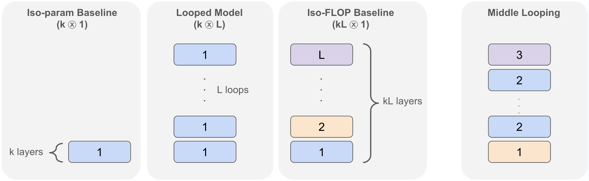
全文的比较都围绕这三个模型展开。下表把它们的代价放在一起，单位是“一层”：
| 模型 | 不同的层 | 参数量 | 每个 token 的计算量 | KV 缓存（本站分析） | 有效深度 |
|---|---|---|---|---|---|
| iso-param 基线 (k⊗1) | k | k | k | k | k |
| 循环模型 (k⊗L) | k | k | kL | kL | kL |
| iso-FLOP 基线 (kL⊗1) | kL | kL | kL | kL | kL |
参数量和计算量两列是论文图 1 的定义。KV 缓存一列是本站补充的分析：自回归生成时，每一次循环里的每一层注意力都要用这一轮的隐藏状态算出自己的 key 和 value；后面的 token 读取的是“同一轮、同一层”的 key 和 value，所以按最直接的实现，循环模型要缓存 \(kL\) 层的 KV，和 iso-FLOP 基线一样多。也就是说，和 iso-FLOP 基线相比，循环模型省下的只有权重本身占的显存（后来的 Mixture-of-Recursions 专门设计了跨循环共享 KV 的变体来压这部分显存）。以第 3 节的 1B 设置为例：按附录给出的形状（宽 2048、FFN 宽 5120），一层约有 3,800 万个参数（不计词表嵌入），24 层约 9 亿；\((4\otimes 6)\) 只有 4 层、约 1.5 亿个参数，但每个 token 的计算量和 KV 缓存与 24 层模型相同（推算）。
2 简单推理任务：小模型循环几次，就能追上深模型
论文用的是最朴素的循环：对任意“序列到序列”的函数 \(f\)，循环 \(L\) 次就是 \(f^{(L)}=f\circ\cdots\circ f\)。这里 \(f\) 是一段 \(k\) 层的 Transformer 主体，所以 \(f^{(L)}\) 等价于一个 \(kL\) 层的模型，其中每相邻 \(k\) 层组成的 \(L\) 个块共享同一组权重。只有中间的 Transformer 层被循环，把 token 变成向量的嵌入层和最后的输出层各只用一次（第 5.1 节有形式定义）。
2.1 n 元加法
任务。输入 \(n\) 个三位数（每个在 000 到 999 之间均匀随机），输出它们的和。例如输入 “315+120+045+824=”，输出 “1304”。训练数据混合了 \(n\in\{2,4,8,16,32\}\) 五种长度，测试时分别在 \(n=8,16,24,32\) 上算准确率。训练时只给“题目 → 答案”，不给任何中间步骤，所以模型必须在一次前向计算里把整道题算完。
为什么需要深度。把 32 个数加起来，最自然的并行做法是两两相加：第一轮把 32 个数配成 16 对，各自相加；第二轮把 16 个部分和配成 8 对……五轮之后得到总和（\(\log_2 32=5\)）。每一轮做的是同一种操作，只是作用在上一轮的结果上。如果模型的一层大致能完成一轮合并，那么 \(n\) 越大，需要的层数越多；又因为每一轮的操作都一样，同一组权重循环执行就够了，不需要每一轮一套新参数。第 5.2 节会把这个直觉变成定理，并画出这棵“两两合并”的树。
设置。模型宽 256、8 个注意力头、FFN 宽 1024，每层约 79 万个参数（推算），12 层的基线也不到 1,000 万参数。训练 20 万步、批大小 1024，一共见过 2 亿个样本；而所有可能的题目超过 \(10^{320}\) 道，所以模型不可能靠背答案。基线是 12 层的 \((12\otimes 1)\)，循环模型是 \((k\otimes 12/k)\)，它们的有效深度都是 12。
| 模型（n 元加法） | 参数 / 计算量 | n = 8 | n = 16 | n = 24 | n = 32 |
|---|---|---|---|---|---|
| 基线 (12⊗1) | 12x / 12x | 100.0 | 100.0 | 100.0 | 100.0 |
| 1 层 (1⊗1) | 1x / 1x | 0.1 | 0.1 | 0.1 | 0.0 |
| 1 层循环 12 次 (1⊗12) | 1x / 12x | 99.9 | 100.0 | 99.9 | 99.6 |
| 2 层 (2⊗1) | 2x / 2x | 85.8 | 71.5 | 49.3 | 38.8 |
| 2 层循环 6 次 (2⊗6) | 2x / 12x | 100.0 | 99.8 | 99.7 | 99.5 |
| 3 层 (3⊗1) | 3x / 3x | 97.2 | 78.5 | 69.2 | 60.7 |
| 3 层循环 4 次 (3⊗4) | 3x / 12x | 100.0 | 99.1 | 97.0 | 96.6 |
数字取自原文表 1 左半部分（准确率，%）。读表的方法是在同一个层数下比较上下两行。只有 1 层的普通模型几乎完全不会做（0.1%）；把这 1 层循环 12 次，准确率变成 99.6%–100%，和 12 层基线一样，而参数只有基线的 1/12。2 层、3 层的普通模型随着 \(n\) 变大迅速崩溃，2 层模型在 \(n=32\) 时只剩 38.8%；它们的循环版本一直保持在 96% 以上。结论是：这个任务主要需要深度，也就是串行的计算步数，并不太需要更多参数。
2.2 p 跳归纳
研究者在训练好的 Transformer 里发现了一种常见的注意力回路，叫归纳头（induction head，Elhage 等人 2021）。它做的事情是：想预测下一个 token 时，先在前文里找到当前这个 token 上一次出现的位置，再把紧跟在那个位置后面的 token 抄过来。比如前文出现过 “Harry Potter”，现在又读到 “Harry”，归纳头就会预测下一个词是 “Potter”。这是模型在上下文里“查找并复制”的基本手段，阅读理解一类的任务大量依赖它。
任务。p 跳问题把归纳头的动作重复 \(p\) 次。给一串由很小的字母表组成的序列，从最后一个 token 出发：找到它上一次出现的位置，跳到紧跟其后的那个 token，这是第 1 跳；再以这个 token 为起点，在它之前找它上一次出现的位置，又跳到后一个，这是第 2 跳……跳完 \(p\) 次停下来的那个 token 就是答案。附录 A.1 的形式定义（取自 Sanford 等人 2024）是：
其中 \(v_1,\dots,v_n\) 是序列，\(\mathrm{find}_1(v,i)\) 返回“位置 \(i\) 的 token 上一次出现处的下一个位置”，找不到时返回 0（表示无解）。下图是本站构造的一个 3 跳例子。
为什么需要深度。每一跳都要用到上一跳的落点，所以直接做的话，\(p\) 跳需要大约 \(p\) 个串行步骤。不过存在一个并行的捷径，叫指针倍增：先让每个位置都算出“从我出发跳 1 次落在哪”；下一轮，每个位置拿着自己的 1 跳指针，去读落点那个位置的 1 跳指针，就得到“跳 2 次落在哪”；再下一轮由 2 跳得到 4 跳……这样只要大约 \(\log_2 p\) 轮就能得到 \(p\) 跳的落点。Sanford 等人（2024）给出了一个大约 \(\log_2 p\) 层的 Transformer 构造，并证明在他们的假设下，非循环模型需要的层数也就是这个量级。指针倍增每一轮做的事情完全一样，天然适合循环。第 5.3 节的推论 5.3 正是说：一个 1 层的 Transformer 循环 \(\lfloor\log_2 p\rfloor+2\) 次就能解 \(p\) 跳问题。
设置与结果。字母表只有 4 个字母，序列长 256，\(p\) 取 16 和 32。训练集 400 万条，验证集和测试集各约 26 万条；模型宽 128、FFN 宽 512、8 个头，每层约 20 万个参数（推算）。答案只有 4 种可能，所以随便猜也有 25%。这里的 iso-FLOP 基线是 6 层模型。
| 模型（p 跳，n = 256） | 参数 / 计算量 | p = 16 | p = 32 |
|---|---|---|---|
| 基线 (6⊗1) | 6x / 6x | 99.9 | 99.6 |
| 1 层 (1⊗1) | 1x / 1x | 48.9 | 49.0 |
| 1 层循环 6 次 (1⊗6) | 1x / 6x | 99.9 | 99.5 |
| 2 层 (2⊗1) | 2x / 2x | 68.8 | 59.4 |
| 2 层循环 3 次 (2⊗3) | 2x / 6x | 99.9 | 99.8 |
| 3 层 (3⊗1) | 3x / 3x | 97.2 | 73.0 |
| 3 层循环 2 次 (3⊗2) | 3x / 6x | 99.9 | 99.5 |
数字取自原文表 1 右半部分。1 层普通模型只有约 49%，比瞎猜好一点；循环 6 次后达到 99.5% 以上，和 6 层基线持平。按推论 5.3 的构造，\(p=16\) 需要 \(4+2=6\) 次循环，\(p=32\) 需要 \(5+2=7\) 次（推算）；实验里 6 次循环在 \(p=32\) 上已经有 99.5%，和理论给出的深度量级一致。
2.3 i-GSM：合成的小学数学题
任务。i-GSM 是作者仿照 Ye 等人（2024）自己生成的数学应用题，但保留成符号形式，不翻译成英文句子。每道题背后是一张由算术关系组成的有向无环图：一些变量直接给出数值，其他变量由别的变量相加、相减或相乘得到；所有运算都在模 7 下进行，图的深度限制为 4；最后问其中一个变量的值。原文表 2 的例题里，变量名形如 E#I、J#P，前几步是：E#I = 4；E#J = E#I = 4；F#K = E#J = 4；H#J = E#J + F#K = 8 ≡ 1；J#P = H#J − F#K = 1 − 4 = −3 ≡ 4（都按模 7 算）。答案只有 0 到 6 七种，所以随便猜大约有 14%。按论文脚注，这种简化设置下仍有超过 70 亿种不同的解题模板；训练集约 400 万道、测试集约 5 万道，训练题和测试题的模板基本不会重合。模型宽 128、FFN 宽 512、8 个头，和 p 跳一样。
为什么需要深度。一个变量要等它依赖的所有变量都算出来才能算，所以必须沿着依赖关系一层层往下推。依赖链越长，需要的串行步数越多；每一步做的事情又很相似（找到依赖项、做一次模 7 运算），所以同样适合循环。
结果：8 层基线 73.2%；1 层模型循环 8 次也是 73.2%，参数只有 1/8；2 层循环 4 次 73.6%，略高于 8 层基线。换个角度看图：几条线几乎只取决于横轴的有效深度，而和“这些深度是来自新参数还是来自重复使用的参数”关系不大。这和加法、p 跳的结论一致，也是论文主张 1 的主要实验依据。
- 模型非常小（每层几十万参数），任务规则固定、数据几乎无限，它们回答的是“这类任务缺的是参数还是串行计算”，不是“循环模型在真实任务上好不好”。
- 循环模型和 iso-FLOP 基线的计算量相同，所以结论是“这些任务要的是串行计算，独有参数不太重要”，而不是“循环能省计算”。
- 加法实验每个设置跑 3 个随机种子，报告最好的那次；论文的理由是关心模型“能不能做到”（表达能力），而不是平均训练结果。表 1、表 2 都没有误差范围。
- 论文内部有一处不一致：正文说加法试了 \(k\in\{2,3,4,6\}\)，表 1 列出的却是 1、2、3 层。i-GSM 训练时是否给出解题步骤，论文没有明说；从“随机猜约 14%”这句话看，评测的是直接输出的最终答案。
3 语言建模：困惑度更差，推理却不差
3.1 实验设置
所有模型都在 Pile 数据集上用标准的下一个 token 预测目标训练 250B 个 token。附录 A.2 给出的细节是：批大小 512 条、每条 1280 个 token，余弦学习率在 40 万步内衰减完（512 × 1280 × 40 万 ≈ 2,620 亿个 token，推算），峰值学习率 0.01，是在基线模型上调出来的；数据预先处理并缓存，保证所有模型以完全相同的顺序看到完全相同的 token。基线是 24 层、宽 2048、FFN 宽 5120、32 个头的解码器。正文称它为 1B 模型，附录 A.2 写作 1.5B；按上面的形状粗算，不含词表的 24 层主体约 9 亿参数（推算），两种说法的差别多半在于是否计入词表嵌入。
每个层数预算 \(k\in\{4,6,8,12\}\) 对应三个模型：(a) 24 层基线 \((24\otimes 1)\)，四组共用；(b) iso-param 基线 \((k\otimes 1)\)，其他维度不变、只把层数改成 \(k\)；(c) 循环模型 \((k\otimes 24/k)\)，参数和 (b) 一样，有效深度和计算量和 (a) 一样。
困惑度（perplexity）是模型在验证集上平均每个 token 的负对数似然再取指数。困惑度 7.40 大致表示：模型预测下一个 token 时的不确定程度，相当于在 7.4 个等可能的候选里挑一个。它的对数就是验证集上的交叉熵损失，\(\ln 7.40\approx 2.00\)，后面图 2 的横轴用的就是这个对数困惑度。困惑度越低，说明模型对训练分布拟合得越好；它和参数量的关系非常紧密，因为参数越多，能记住的统计规律越多。
下游评测分四组，共 19 个任务。闭卷问答（TriviaQA、TydiQA-NoContext、Natural Questions、Web Questions，共 4 个）只给问题、不给材料，模型只能靠预训练时记住的知识回答，所以论文把它当作“记忆”的代表。开卷问答（TydiQA-GoldP、SQuAD v2、DROP、QuAC、CoQA，共 5 个）会给一段材料，答案要从材料里找出或推出来，类似阅读理解，需要更多“从上下文推理”。数学应用题是 SVAMP、ASDiv 和 MAWPS 的四个子集，共 6 个，用 5-shot 评测，即在题目前面放 5 道带答案的例题，让模型照着格式作答。推理基元来自 Saunshi 等人（2024）的变量赋值题：深度 0 的例子是 “a=1, b=2, c=6, b=?”（答案 2，直接在上下文里查），深度 1 的例子是 “a=1, b=2, c=a, d=b, d=?”（先查到 d=b，再查 b=2）；每种深度各有数学和代码两种写法，共 4 个，也用 5-shot 评测。这些题和预训练数据无关，只能靠读上下文来解。
前三组合起来是 15 个任务，表 3 的“全部任务平均”指的就是这 15 个，不含推理基元。本站核对过：24 层基线的 \((4\times 11.2+5\times 33.9+6\times 29.3)/15\approx 26.0\)（推算），与表中数字一致。
3.2 表 3：循环模型输在哪里、赢在哪里
| 模型 | 参数 / 计算量 | 困惑度 ↓ | 闭卷问答 | 开卷问答 | 数学应用题 | 15 项平均 | 推理基元 |
|---|---|---|---|---|---|---|---|
| 基线 (24⊗1) | 24x / 24x | 7.40 | 11.2 | 33.9 | 29.3 | 26.0 | 47.5 |
| (12⊗1) | 12x / 12x | 8.16 | 8.2 | 26.9 | 26.7 | 21.8 | 35.7 |
| 循环 (12⊗2) | 12x / 24x | 7.90 | 9.3 | 30.8 | 34.3 | 26.5 | 51.2 |
| % Gap | 34% | 37% | 56% | 282% | 110% | 131% | |
| 中间循环 (4⊗1,4,1) | 12x / 24x | 7.81 | 11.0 | 32.3 | 28.3 | 25.0 | 56.5 |
| % Gap | 46% | 94% | 78% | 62% | 95% | 176% | |
| (8⊗1) | 8x / 8x | 8.75 | 6.3 | 22.7 | 17.1 | 16.1 | 33.0 |
| 循环 (8⊗3) | 8x / 24x | 8.19 | 8.5 | 30.8 | 28.4 | 23.9 | 55.3 |
| % Gap | 41% | 44% | 72% | 92% | 78% | 153% | |
| (6⊗1) | 6x / 6x | 9.25 | 4.0 | 19.3 | 17.7 | 14.6 | 24.1 |
| 循环 (6⊗4) | 6x / 24x | 8.42 | 8.2 | 28.7 | 29.8 | 23.7 | 56.1 |
| % Gap | 44% | 58% | 64% | 104% | 80% | 136% | |
| (4⊗1) | 4x / 4x | 10.12 | 1.8 | 13.8 | 9.7 | 9.0 | 19.4 |
| 循环 (4⊗6) | 4x / 24x | 8.79 | 6.7 | 26.2 | 24.8 | 20.4 | 56.9 |
| % Gap | 48% | 52% | 61% | 77% | 67% | 133% |
数字取自原文表 3，下游分数是各组任务的平均准确率（%）。“参数 / 计算量”一栏以一层为单位。
先看困惑度。所有循环模型都比同参数的 iso-param 基线好，又都比 24 层基线差（7.90–8.79 对 7.40）。这并不意外，因为循环模型的参数只有基线的 \(k/24\)，能存的东西更少。ALBERT 和 CoTFormer 等早先的工作也观察到同样的现象，这正是循环模型长期在语言建模里不受重视的主要原因。
再看下游任务。闭卷问答的情况和困惑度相似：循环模型全部低于 24 层基线（6.7–9.3 对 11.2）。开卷问答也全部低于基线（26.2–30.8 对 33.9），但离基线近得多。数学应用题上，\((12\otimes 2)\) 得到 34.3、\((6\otimes 4)\) 得到 29.8，都高于 24 层基线的 29.3；另外两个低于基线。推理基元上，四个循环模型（51.2–56.9）全部超过 24 层基线（47.5），哪怕 \((4\otimes 6)\) 的参数只有基线的 1/6。
为了把不同任务组放到同一把尺子上比较，作者定义了 % Gap：
这里 \(\text{Avg}_{G}\) 是某个模型在任务组 \(G\) 上的平均分。分母是“同参数的浅模型”和“同计算量的深模型”之间的差距，也就是给浅模型补上深度、同时补上相应参数能带来多少提升；分子是只补深度、不补参数（靠循环）能拿回多少。% Gap 接近 0，说明对这组任务来说，光有深度没用，参数才是关键；接近 100%，说明参数没那么重要，深度（哪怕是循环得来的）就够了；超过 100%，说明循环模型比同计算量的深模型还好。
用 \((12\otimes 2)\) 这一行完整算一遍：
| 任务组 | (12⊗1) | (12⊗2) | (24⊗1) | 本站计算 | 论文报告 |
|---|---|---|---|---|---|
| 困惑度 | 8.16 | 7.90 | 7.40 | (7.90 − 8.16) / (7.40 − 8.16) = −0.26 / −0.76 ≈ 34% | 34% |
| 闭卷问答 | 8.2 | 9.3 | 11.2 | 1.1 / 3.0 ≈ 37% | 37% |
| 开卷问答 | 26.9 | 30.8 | 33.9 | 3.9 / 7.0 ≈ 56% | 56% |
| 数学应用题 | 26.7 | 34.3 | 29.3 | 7.6 / 2.6 ≈ 292% | 282% |
| 15 项平均 | 21.8 | 26.5 | 26.0 | 4.7 / 4.2 ≈ 112% | 110% |
| 推理基元 | 35.7 | 51.2 | 47.5 | 15.5 / 11.8 ≈ 131% | 131% |
困惑度越低越好，所以分子和分母都是负数，比值仍然表示“补回了多少比例”。困惑度这一行读作：从 12 层到 24 层，困惑度能从 8.16 降到 7.40；循环只拿回了其中约三分之一。开卷问答拿回了一半多，推理基元则超过了全部差距。
数学应用题那一行值得多看一眼。分母只有 2.6 分，而表里的分数只保留一位小数，±0.05 的舍入就能让比值变化好几个百分点，所以本站用表中数字算出 292%，论文报告 282%；用附录表 7 的各任务分数重新求平均（26.65、34.25、29.37），得到约 279%（推算），三者都不一致。这说明：分母很小时 % Gap 会被放大。282% 首先说明的是“12 层浅模型和 24 层基线在数学上本来只差 2.6 分”，而不是循环带来了接近 3 倍的效果；更直接的读法是 \((12\otimes 2)\) 比 24 层基线高 5 分（34.3 对 29.3）。
推理基元的优势来自哪里（本站核对附录表 8）。推理基元的 4 个任务里，深度 0 的两个（代码、数学写法）上，24 层基线是 71.1 和 72.5，四个循环模型在 73.5–90.6 之间，优势很明显；但深度 1 的两个任务上，所有模型——包括 24 层基线、所有循环模型和第 4 节的正则化模型——都只有 17%–31%，循环看不出可见的作用。所以“循环模型在推理基元上超过 1B 基线”这一结论，几乎完全来自深度 0 的单步查找，也就是“在上下文里找到 b=2 并抄出来”。这种能力更接近第 2.2 节的归纳头，而不是多步推理。
3.3 同样的困惑度下比下游：归纳偏置
一个模型能拟合训练数据的方式往往有很多种。架构和训练算法会让模型更倾向于找到其中某一类解，这种倾向叫归纳偏置。Liu 等人（2023）发现，预训练损失相同的两个语言模型，下游表现可以差很多，差别就来自归纳偏置。所以想证明“循环模型偏向推理”，光看它推理分数高还不够：循环模型的困惑度比 iso-param 基线低，推理分数高可能只是因为它整体更强。更公平的比法是把两个模型放在相同的困惑度下比下游分数。
作者用的是 Saunshi 等人提出的“等困惑度图”（isoplot）：每个模型从第 12 万步开始，每隔 2 万步存一个检查点，记下它的验证对数困惑度和下游分数，画成散点，再用一条直线拟合“对数困惑度 → 下游分数”。如果在相同的横坐标上，循环模型的直线更高，就说明它在同样的语言建模水平下，下游表现更好。
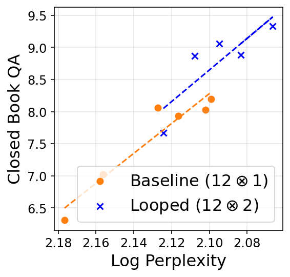
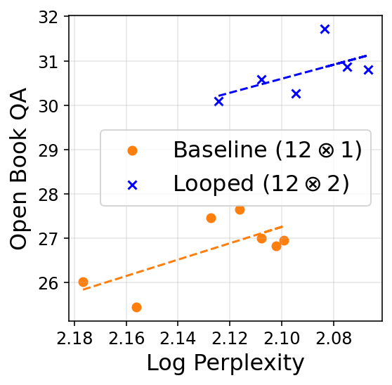
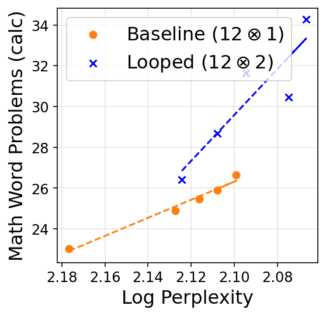
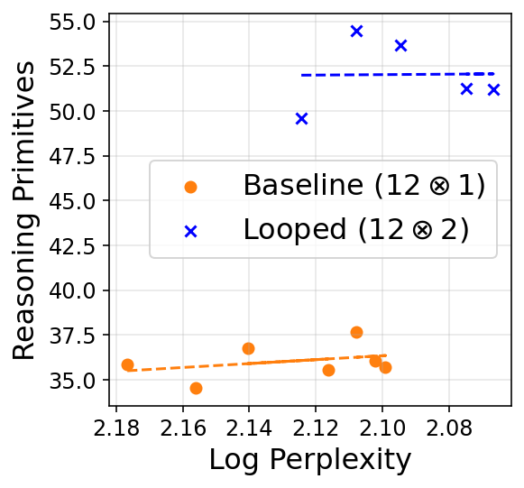
论文对所有 \(k\) 都看到同样的三条规律（附录图 7 是 \((8\otimes 1)\) 对 \((8\otimes 3)\) 的同类图）：第一，闭卷问答上，两种模型的直线（外推后）基本重合，说明对记忆类任务，困惑度几乎就能决定下游表现，循环没有额外好处；第二，开卷问答和数学应用题上，循环模型的直线总是更高，说明困惑度相同时，循环模型在这些更需要推理的任务上更强；第三，推理基元上两者差别悬殊，循环模型在训练的大部分时候都表现很好。作者据此认为循环模型有一种偏向推理的强归纳偏置。
- 两种模型的横坐标范围只有一小段重合（读图估计：普通模型约 2.18→2.10，循环模型约 2.12→2.07）。“同样困惑度下比较”有相当一部分依赖拟合直线的外推，论文自己在闭卷问答那一条也注明了“如果外推的话”。
- 推理基元的点几乎是水平的，下游分数不随困惑度变化，所以拟合直线的意义不大；能看出的只是从第 12 万步起两者就差了一个固定的水平。
- 这张图比较的是循环模型和同参数的 iso-param 基线，后者的计算量只有前者的一半。
3.4 中间循环，以及它和渐进堆叠的关系
背景：渐进堆叠。渐进堆叠（gradual stacking）是一种加速预训练的办法：先训练一个浅模型，再把其中一些层复制一份叠上去，让模型逐步变深。新复制出来的层一开始和原层一模一样，所以在复制的那一刻，模型其实就是一个循环模型。Saunshi 等人（2024，NeurIPS 2024）提出的 MidAS 是渐进堆叠的一个变体，最多能让训练加快 40%，而且他们意外地发现，MidAS 训练出的模型在相同困惑度下推理更好，和图 2 的现象一样。那篇论文猜测，原因正是堆叠和循环之间的这层联系。本文的结果为这个猜测提供了证据：直接训练循环模型，也出现了同样的偏置。至于这种偏置为什么会出现，作者承认仍是开放问题。
中间循环。受这项工作启发，作者还试了一种变体：网络开头和结尾的几层各自独立，只循环中间的一段。直觉来自 Saunshi 等人（2024）的经验：首尾几层在模型里承担特殊角色（比如把 token 转成内部表示、再转回词表），应该和中间层区别对待。表 3 里的中间循环写作 \((4\otimes 1,4,1)\)。
结果（表 3）：中间循环的困惑度是 7.81，比整体循环的 7.90 好；闭卷问答 11.0，几乎追平 24 层基线的 11.2；开卷问答 32.3、15 项平均 25.0、推理基元 56.5；唯独数学应用题 28.3，明显低于整体循环的 34.3。作者的结论是：中间循环困惑度更好、各项提升更均匀（数学除外），可能是更实用的循环方式；什么样的循环方式最好，留给以后研究。
- 中间循环只试了一种配置、一个规模、一次训练。后来的一些论文（例如 Parcae）把本文当作“中间循环比在开头或结尾循环更有效”的出处，但本文实际只比较了“中间循环”和“整体循环”两种方式。
- 中间循环的闭卷问答 % Gap 高达 94%：参数只有一半，记忆类任务却几乎追平了 24 层基线。这和“记忆主要取决于参数量”的简洁说法并不完全吻合，说明“推理靠深度、记忆靠参数”的二分法在这组数据里没有那么干净。
3.5 循环次数的缩放规律，以及和 CoT 的类比
前面的实验固定了有效深度 24。这一小节反过来问：固定参数，只增加循环次数，表现会怎样变化？和“加新层”比，“加循环”值多少？作者训练了 4 层模型循环 \(L\) 次的 \((4\otimes L)\)，\(L\in\{1,2,3,6,9,12\}\)，有效深度 \(D=4L\) 从 4 到 48；作为同计算量对照，又训练了 \((4L\otimes 1)\)，即 4 到 48 层的普通模型（48 层模型的参数约是 1B 基线的两倍，推算）。两者都发现准确率随深度增加而提高，但收益递减，并且都能很好地用一条对数曲线拟合：
其中 \(\alpha\) 衡量“深度每翻一倍能多拿几分”。作者对每组任务计算 \(\alpha_{\text{loop}}/\alpha_{\text{base}}\)，即“靠循环得来的深度”和“靠新参数得来的深度”的效率之比。
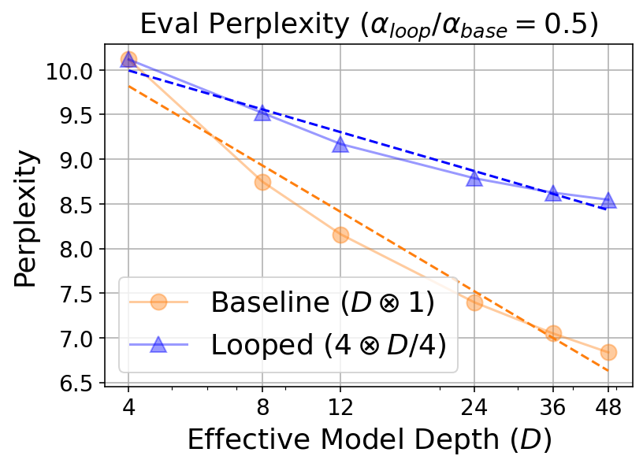
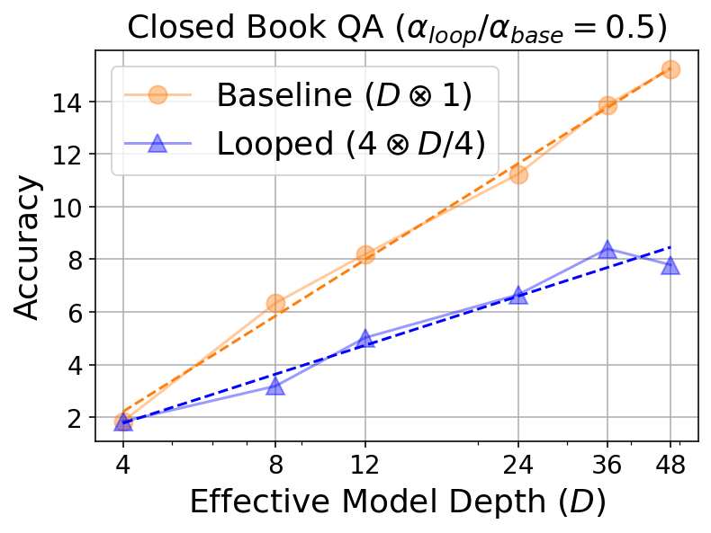
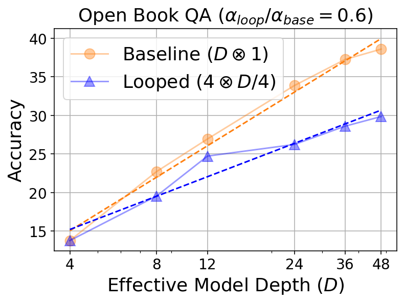
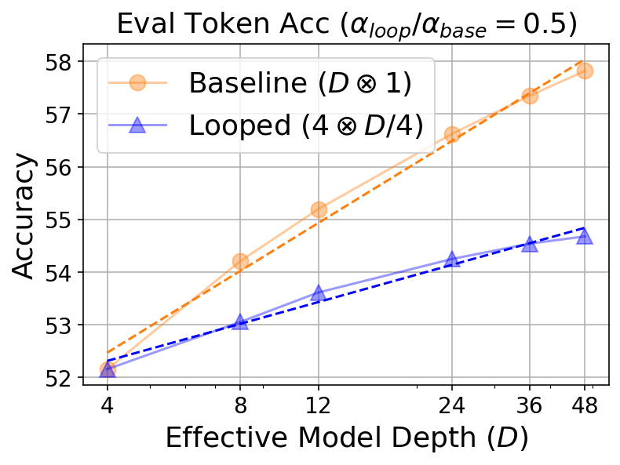
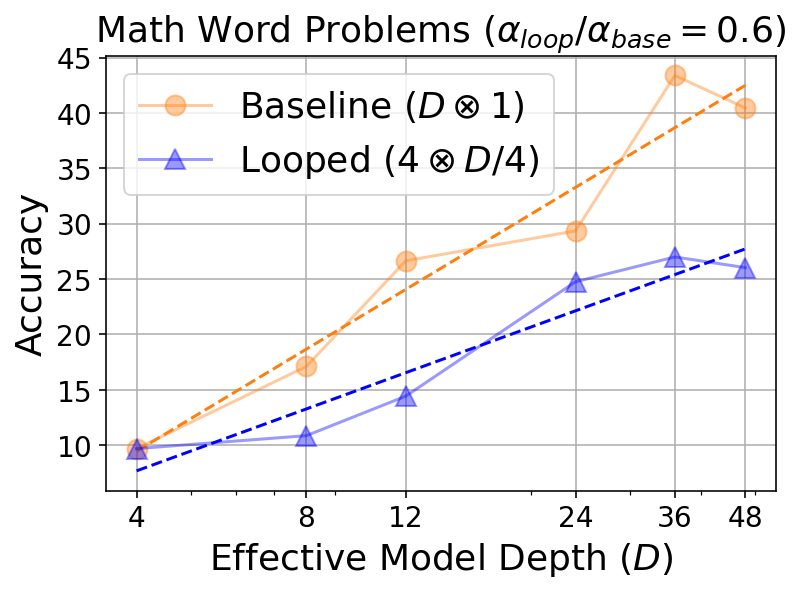
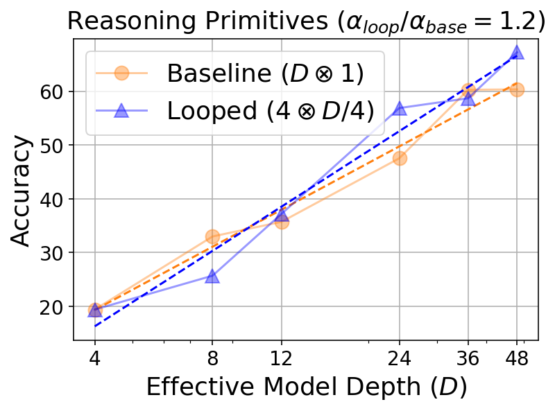
作者从图 3 得出两点：更多的循环一直有帮助；循环的相对收益在开卷问答和数学这类推理任务上更高，在推理基元上（1.19 倍）甚至超过了加新层。本站提醒一下这几个比值的实际含义：除推理基元外，比值都只有 0.5–0.6，也就是说，同样多加一层有效深度，循环带来的提升只有加新层的一半左右；“推理任务上相对收益更高”指的是 0.6 比 0.5。
潜在思考与 CoT。作者接着问：为什么循环模型会有这种“越想越好”的缩放规律？他们的回答是把循环和思维链联系起来。最近的“思考型”模型（如 OpenAI o1、DeepSeek-R1）表现出推理时扩展：生成的思考 token 越多，推理题的准确率越高。作者注意到，CoT 本身就可以看成一个循环模型：每一轮把整个模型跑一遍，产出一个思考 token，再把它接到输入后面进入下一轮。循环模型也是每一轮把同一组层再跑一遍，不同之处在于它每一轮会同时改写所有位置的向量，相当于每轮产出很多个“潜在思考”，而且这些思考是连续向量，不必压缩成一个离散 token。既然 CoT 能随思考长度扩展，循环模型能随循环次数扩展也就不奇怪了。第 5.4 节把这个直觉变成了定理（并用原文图 4 画出两者的对比）。作者认为，显式地用循环来做推理时扩展是很有前景的方向。
3.6 结果的份量：这些数字能说明多少
- 规模。语言模型实验只有一个规模：24 层、约 1B 参数的基线，在 Pile 上训练 250B 个 token。循环模型的独有参数从约 1.5 亿（4 层）到约 4.5 亿（12 层）（推算）。合成任务的模型更小，每层只有几十万参数。
- 比较时匹配了什么。循环模型和 24 层基线之间，每个 token 的训练计算量、推理计算量、训练 token（同一批数据、同一顺序）都相同，KV 缓存也相同（本站分析），只有独有参数少 \(24/k\) 倍，所以表 3 是一个干净的“同计算量、少参数”比较。循环模型和 \((k\otimes 1)\) 之间，参数相同，但循环模型多花了 \(24/k\) 倍计算。论文里最醒目的几句话，比如“远好于同参数模型”“1 层循环 12 次就能做加法”，成立的前提都是循环模型多花了计算。
- 同样的计算量下输在哪里。困惑度全部更差（7.90–8.79 对 7.40）；闭卷问答全部更差（6.7–9.3 对 11.2）；开卷问答全部更差（26.2–30.8 对 33.9）；15 项平均只有 \((12\otimes 2)\) 略高（26.5 对 26.0），其余更低（20.4–23.9）；数学应用题有两个更高、两个更低。图 3 里，除推理基元外，循环的深度效率只有加新层的 0.5–0.6 倍。所以如果约束是计算量而不是参数量，这篇论文的数据并不支持用循环模型代替同计算量的深模型；它支持的是：在参数受限时，循环是把计算转化为能力的有效办法，而且转化出的能力偏向推理和上下文查找。
- 赢在哪里。推理基元上四个循环模型全部超过基线，但正如第 3.2 节核对的，优势几乎全部来自深度 0 的单步查找。
- 统计上的不确定性。每个语言模型只训练了一次，没有不同随机种子的重复，也没有置信区间。学习率在基线上调好后直接用于所有模型，循环模型没有单独调参，这可能低估、也可能高估它们。
- 基线和复现。所有基线都是作者在同一套流程里自己训练的，不是公开模型。论文没有发布代码和权重。后来的独立工作里，Iso-Depth（2026）用了本文的下游任务集，在小得多的计算预算下严格匹配训练计算量，发现阅读理解类任务上循环模型确实能追平，但推理基元上反而是不循环的模型几乎在每个预算都领先；SMELT（2026）在 MoE 模型上同时匹配了每 token 计算量、参数量和 KV 缓存，发现只循环中间一半层两次，能在计算最优前沿上省下 6.8%–18.0% 的训练计算，说明“严格匹配之后循环仍有正收益”在另一种设置下成立。详见“后来怎么样了”。
英文原文 §3 ↗ · 原文表 3 ↗ · 原文图 2 ↗ · 原文图 3 ↗ · 附录 A.2 / A.3 ↗
4 循环启发的正则化：不真的循环，只让层“长得像”
做法。把一个 \(L\) 层的模型看成 \(f_{0}\circ f_{1}\circ\cdots\circ f_{L/k-1}\)，每个 \(f_i\) 是连续的 \(k\) 层。真正的循环模型要求所有 \(f_i\) 完全相同；正则项则只要求相邻两块尽量相似。具体到每一个参数组 \(G\)（例如注意力的 query 矩阵、FFN 的第一层权重），记 \(\theta_{G}^{(l)}\) 为第 \(l\) 层里这组参数，正则项是：
\(i\) 遍历相邻的两块，\(j\) 遍历块内第几层，所以第 \(ik+j\) 层和第 \((i+1)k+j\) 层配成一对，也就是相隔正好 \(k\) 层的两层。一共有 \((L/k-1)\cdot k=L-k\) 对，前面的 \(1/(L-k)\) 就是取平均。以 \(L=24\)、\(k=4\) 为例：6 块，5 对相邻块，每对 4 层，共 20 对（0 与 4、4 与 8、……、1 与 5、……）。总损失是交叉熵加上所有参数组的平均：
\(\lambda_{\text{reg}}=0\) 就是普通训练；\(\lambda_{\text{reg}}\to\infty\) 会把模型逼成一个真正的循环模型；中间的取值得到“近似循环”的模型。为了模仿 \((4\otimes 6)\)，作者取 \(k=4\)、\(L=24\) 和较大的 \(\lambda_{\text{reg}}=10\)，其他超参数和基线完全相同。他们也试过用 \(\ell_2\) 距离把权重拉近，但发现余弦相似度更稳、更有效。一个小细节：按字面，公式是把余弦相似度加到要最小化的损失上，那样会鼓励各层变得不相似；作者的意图显然是奖励相似度，实际实现应当相当于减去这一项或最小化 \(1-\cos\)（本站理解，论文未说明）。
正则真的起作用了吗。作者在训练结束后测了相邻块之间的余弦相似度，所有参数组都在 0.98 左右或更高，见下面的原文图。
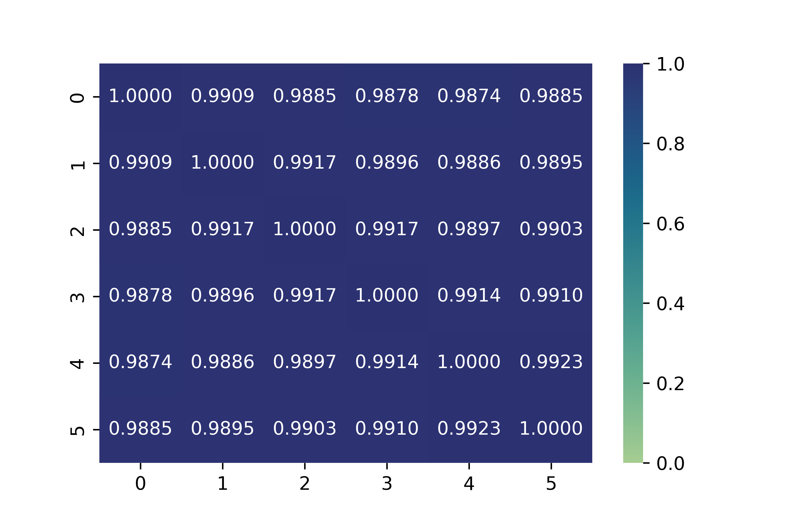
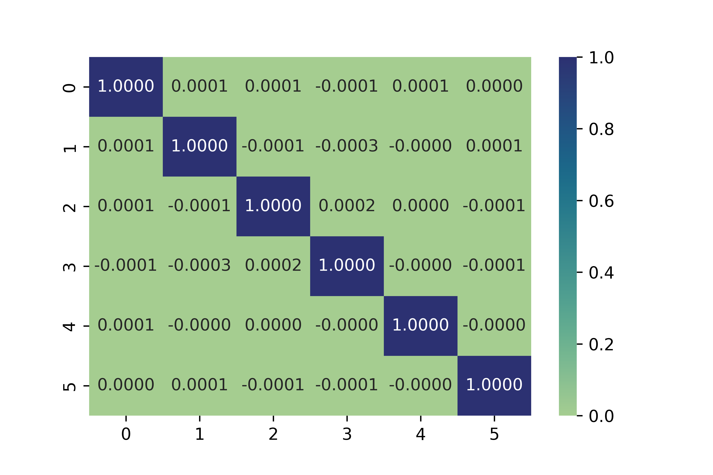
余弦相似度 0.99 听起来像“几乎相同”，但换算一下：两个长度相同的向量，它们的差的长度是 \(\|a-b\|=\sqrt{2(1-\cos)}\,\|a\|\)；\(\cos=0.99\) 时约为 \(0.14\|a\|\)（推算）。也就是说，相邻块的权重仍然有约 14% 的相对差别，模型保留了相当大的自由度。这正是作者想要的：既像循环，又有余地去降低困惑度。
| 24 层模型 | 困惑度 ↓ | 闭卷问答 | 开卷问答 | 数学应用题 | 15 项平均 | 推理基元 |
|---|---|---|---|---|---|---|
| 基线 | 7.40 | 11.2 | 33.9 | 29.3 | 26.0 | 47.5 |
| 正则 k = 4, λ = 1 | 7.41 | 11.2 | 34.8 | 31.6 | 27.2 | 42.5 |
| 正则 k = 4, λ = 10 | 7.38 | 12.5 | 36.2 | 36.4 | 30.0 | 57.2 |
| 正则 k = 6, λ = 10 | 7.40 | 12.0 | 35.8 | 31.0 | 27.5 | 55.8 |
| 正则 k = 8, λ = 10 | 7.43 | 11.3 | 34.4 | 32.8 | 27.6 | 56.3 |
| 正则 k = 12, λ = 10 | 7.51 | 10.1 | 34.1 | 32.3 | 27.0 | 50.7 |
数字取自原文表 4。效果最好的是 \(k=4\)、\(\lambda_{\text{reg}}=10\)：困惑度 7.38，和基线的 7.40 几乎一样；15 项平均从 26.0 升到 30.0，数学应用题从 29.3 升到 36.4，推理基元从 47.5 升到 57.2，连闭卷问答也从 11.2 升到 12.5。正则太弱（\(\lambda_{\text{reg}}=1\)）时，推理基元反而降到 42.5；块太大（\(k=12\)）时，困惑度升到 7.51，闭卷问答降到 10.1。
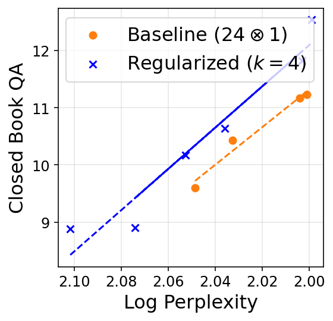
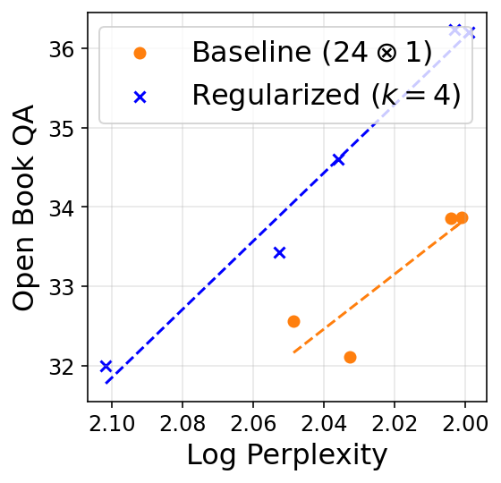
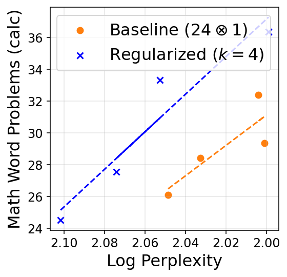
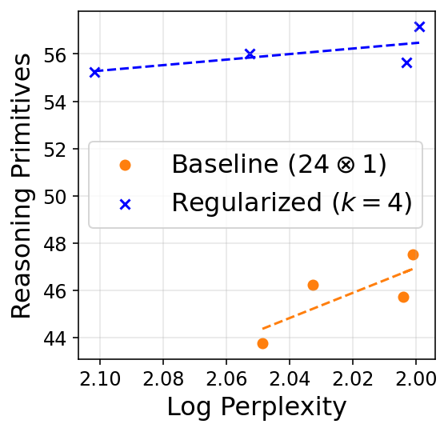
- 这是全文最干净的一组比较：正则模型和基线的参数量、计算量、训练数据完全相同，只有训练目标不同。
- 但每个设置只训练了一次，没有误差范围；表 4 列出的 5 组超参都报告了，最好的一组是从中挑出来的。
- 正则模型并不更省：它仍然有 24 个独立的层，推理成本和基线一样。它是一个训练技巧，不是一个效率方法。
5 理论：为什么少量参数加足够的循环就够了
这类定理回答的是“存不存在一组权重，让模型精确地完成某个任务”。它不回答“用梯度下降训练能不能找到这组权重”，也不回答“训练出来的模型实际上是不是这么做的”。所以它们提供的是一种上限意义上的解释：循环这种结构没有挡住正确答案，而且只需要很少的参数。论文沿用 Li 等人（2024）的有限精度设定：所有参数和中间结果都是固定位数的定点数，每做一次运算就四舍五入一次。这让“Transformer 能算什么”的讨论更贴近真实硬件，也让它可以和电路复杂度理论联系起来。
5.1 记号
论文把一个 \(L\) 层的 Transformer 块写成带残差的注意力层和前馈层交替复合：
其中 \(\mathrm{id}\) 是恒等映射，\(\mathrm{id}+\mathsf{FF}\) 就是“前馈层加残差”。整个模型是“嵌入 → 块 → 输出”，而 \((L\otimes T)\) 循环 Transformer 就是把中间的块执行 \(T\) 次：
注意理论部分换了字母：这里 \(L\) 是块里的层数、\(T\) 是循环次数，对应前面实验部分的 \((k\otimes L)\)。\(T=1\) 时就是普通的非循环模型。
5.2 群元素连乘：1 层循环 \(\lceil\log_2 n\rceil\) 次就够
群是一个集合加上一种运算，满足三条：结合律（\((a\circ b)\circ c=a\circ(b\circ c)\)）；有一个单位元 \(e\)，和谁运算都不改变对方；每个元素都有逆元。例子：0 到 9 在“相加再模 10”下构成一个群，多位数加法里个位的计算就是在这个群里连乘；5 个物体的全部 120 种排列在“先做一个排列、再做另一个”下也构成一个群，记作 \(S_5\)，它的运算不满足交换律。群连乘问题：给定 \(g_1,\dots,g_n\)，求 \(g_1\circ g_2\circ\cdots\circ g_n\)。它是第 2.1 节加法任务的推广。
它和深度的关系来自电路复杂度。层数固定、精度有限的 Transformer 能计算的函数，被包含在一个叫 \(\mathsf{TC}^0\) 的类里（常数深度、多项式规模、允许“多数表决”门的电路）。而 \(S_5\) 这种“不可解群”的连乘问题是 \(\mathsf{NC}^1\) 完全的（Barrington 1986）。如果像普遍相信的那样 \(\mathsf{TC}^0\neq\mathsf{NC}^1\)，那么层数固定的 Transformer 就不可能对所有 \(n\) 都算对 \(S_5\) 连乘，深度必须随 \(n\) 增长。对于“可解群”，包括模 10 加法这种满足交换律的群，理论上存在常数深度的“捷径”解（Liu 等人 2022），但可能需要大得多的宽度。所以“推理需要深度”在这里有严格的含义。附录还提到，有了 CoT，一两层的 Transformer 就能完成任意群的连乘（Li 等人 2024；Merrill 与 Sabharwal 2023），这是 CoT 增加串行计算的又一个证据。
定理 5.1（本站转述）。对任意有限群 \(G\) 和任意 \(n\)，存在一个只有 1 层的 Transformer 块，循环 \(T=\lceil\log_2 n\rceil\) 次后，读入“# \(g_1\dots g_n\)”就输出 \(g_1\circ\cdots\circ g_n\)。它只需要常数精度，嵌入维度 \(d=3\big(\lceil\log_2|G|\rceil+\lceil\log_2 n+1\rceil\big)\)，MLP 隐层宽 \(|G|^2+6\lceil\log_2|G|\rceil\)，注意力隐维 \(\lceil\log_2 n\rceil\)，2 个注意力头。
构造的思路。把开头的 # 当作单位元 \(e\)，放在位置 0，元素 \(g_1,\dots,g_n\) 放在位置 1 到 \(n\)。每一轮循环，位置 \(i\) 都执行同一条规则（附录算法 2）：
也就是说，位置 \(i\) 去读上一轮第 \(2i-n-1\) 和第 \(2i-n\) 个位置上的元素（下标小于 0 就读位置 0 的单位元），把两者相乘作为自己的新值。两个注意力头各负责读一个位置：用位置编码当 key，用目标位置当 query，并把注意力调得足够“尖”，让它只看那一个位置。MLP 负责相乘：它有 \(|G|^2\) 个神经元，每个对应一对 \((h,h')\)，只有当两个输入恰好是 \(h\) 和 \(h'\) 时才激活，输出 \(h\circ h'\)，相当于把整张乘法表存进了 MLP。由于结合律，每一轮之后所有位置的乘积保持不变；\(\lceil\log_2 n\rceil\) 轮后，最后一个位置上就是完整的乘积。关键在于：这条规则每一轮都一样，不依赖轮次，所以同一组权重可以循环使用。
算一下具体的大小（推算）。对模 10 加法（\(|G|=10\)）、\(n=32\)：循环 5 次，嵌入维度 \(3\times(4+6)=30\)，MLP 隐层 \(100+24=124\)，2 个头，是一个非常小的模型。对 \(S_5\)（\(|G|=120\)）：嵌入维度 \(3\times(7+6)=39\)，但 MLP 隐层要 \(14{,}400+42=14{,}442\)，因为乘法表有 \(120^2\) 项。
这条定理的意义。\(\lceil\log_2 n\rceil\) 的深度和 Liu 等人（2022）给非循环模型的上界一致，也接近他们证明的下界，所以循环模型能用已知最好的深度解决这个问题。区别在于，Liu 等人的构造每一层用不同的注意力参数，而这里只用一层的参数。
5.3 循环模型能模拟“层多但种类少”的模型，p 跳问题因此可解
定理 5.2（本站转述）。任取一个 \(L\) 层的 Transformer，嵌入维度 \(d\)、MLP 隐层 \(d_{\mathsf{FF}}\)、\(H\) 个注意力头，假设它的 \(L\) 层里最多只有 \(R\) 种不同的层，并且激活值有界。那么存在一个 1 层的块，循环 \(L\) 次（输入前面加一个占位符 #）后，对任何输入都给出和原模型完全相同的输出分布。代价是：嵌入维度变成 \(d+R+2\)，MLP 隐层变成 \(R\cdot d_{\mathsf{FF}}+O(L)\)，注意力头变成 \(R\cdot H\) 个。
构造的思路。把 \(R\) 种不同的层并排塞进同一个“宽”层里：MLP 的神经元分成 \(R\) 组，注意力头也分成 \(R\) 组，每组是一种原始层的拷贝。嵌入里额外存一个“当前是第几层”的计数器，每循环一次加 1，并由它算出“这一轮该用第几种层”。不该用的那些 MLP 神经元被一个很大的负偏置压成 0；不该用的注意力头被设置成把全部注意力都放在位置 0 的占位符 # 上，而 # 的 value 是零向量，于是这些头什么也不贡献。这样每一轮循环里只有“该出场”的那一种层在起作用。
| A | B | C | |
|---|---|---|---|
| 第 1 次循环（原第 1 层 = A） | |||
| 第 2 次循环（原第 2 层 = B） | |||
| 第 3 次循环（原第 3 层 = A） | |||
| 第 4 次循环（原第 4 层 = C） | |||
| 第 5 次循环（原第 5 层 = A） | |||
| 第 6 次循环（原第 6 层 = B） |
这条定理说明，“深而种类少”和“循环”几乎是一回事，循环的代价只是把宽度放大 \(R\) 倍。当一个问题的解法只需要少数几种操作反复执行（\(R\) 很小）时，循环几乎没有额外代价。把它用在 Liu 等人那个 \(O(\log_2 n)\) 层的群连乘构造上，也能得到一个单层循环解，只是参数效率不如定理 5.1。
推论 5.3（p 跳问题）。Sanford 等人（2024）给出的 p 跳构造有 \(\lfloor\log_2 p\rfloor+2\) 层，其中最多只有 3 种不同的层，每层的宽度都是常数、1 个注意力头、\(O(\log n)\) 位精度。代入定理 5.2，就得到：一个 1 层的 Transformer 循环 \(\lfloor\log_2 p\rfloor+2\) 次即可解 p 跳问题，嵌入维度、MLP 和注意力的宽度都是常数，最多 3 个注意力头。这个循环次数和 Sanford 等人为非循环模型证明的层数下界同一量级，所以也是近乎最优的。这为第 2.2 节“1 层循环 6 次就能做 p 跳”提供了理论依据。
5.4 循环模型能模拟思维链
思维链（chain-of-thought，CoT）是让模型在给出答案之前，先把中间步骤一个 token 一个 token 地写出来。每写出一个 token，它就被接到输入后面，模型再完整地跑一遍来生成下一个。所以写 \(m\) 个思考 token，就相当于多做了 \(m\) 轮串行计算，每一轮都能用到前面所有轮写下的东西。理论工作（Li 等人 2024；Merrill 与 Sabharwal 2023）证明，CoT 能严格扩大固定深度 Transformer 能计算的范围，比如上面说的 \(S_5\) 连乘。实践中，o1、DeepSeek-R1 这类“思考型”模型在推理时多花思考 token，准确率就随之提高，这被称为推理时扩展（inference-time scaling）。
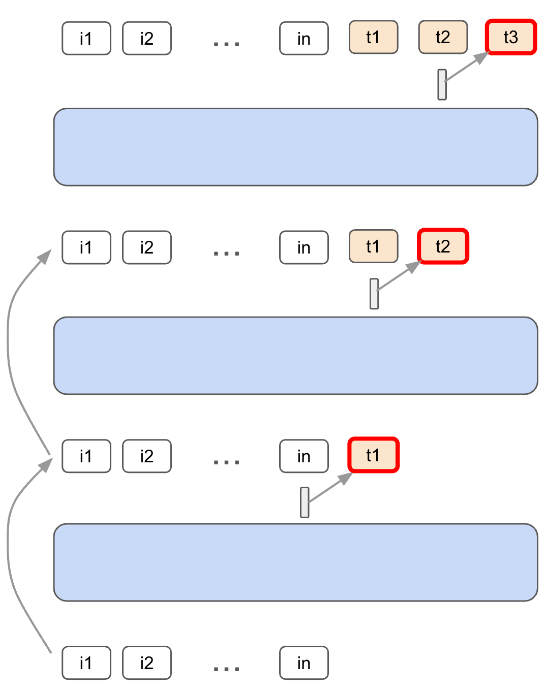
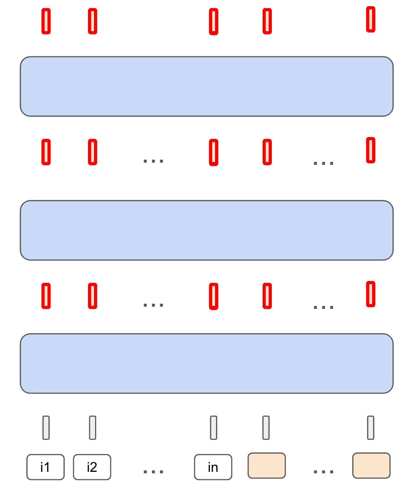
定理 5.4（本站转述）。任取一个 \(L\) 层的非循环 Transformer，固定输入长度 \(n\) 和 CoT 步数 \(m\)。存在一个循环 Transformer，它的块有 \(L+O(1)\) 层，嵌入维度多出 \(\log(n+m)\) 量级，注意力头多出常数个，使得：把输入后面接上 \(m\) 个占位符 #，循环 \(m\) 次，得到的输出和原模型做 \(m\) 步 CoT 之后的输出完全相同。（正文写的是“多出 \(\Omega(\log(n+m))\) 维”，附录正式陈述写“常数倍”；看证明，实际多出的是 \(3s\) 维，\(s\) 约为 \(\log_2(n+m)+1\)，即 \(O(\log(n+m))\)。）
构造的三个部件。
- 只更新一个位置。每个位置都维护一个循环计数器 \(t\)。第 \(t\) 轮里，只允许第 \(n+t\) 个位置及之后的位置被更新，之前的位置保持原值（由 MLP 实现的门控）。第 \(n+t\) 个之后的位置虽然也被更新，但它们的值在后面的轮次里会被重新覆盖，所以不影响结果。
- 右移一位。CoT 里，第 \(n+t-1\) 个位置算出的 token 会被放到第 \(n+t\) 个位置当作输入。循环模型用一个注意力头把“前一个位置在本轮的输出”取到当前位置，模拟这一步。
- 解码再嵌入。CoT 要把输出向量变成一个具体的 token（取概率最大的那个），再查表变回嵌入向量。论文证明几层带 ReLU 的 MLP 就能精确地完成“取最大值 → 查嵌入”这件事。
| i₁ | i₂ | i₃ | #₁ | #₂ | #₃ | #₄ | |
|---|---|---|---|---|---|---|---|
| 第 1 次循环 | |||||||
| 第 2 次循环 | |||||||
| 第 3 次循环 | |||||||
| 第 4 次循环 |
算一下这种模拟的代价（推算）。用 KV 缓存做 \(m\) 步 CoT，大约是把 \(n+m\) 个 token 各送过 \(L\) 层一次，即约 \((n+m)L\) 次“token × 层”的计算。上面的循环模拟每一轮都要把全部 \(n+m\) 个位置送过 \(L+O(1)\) 层，\(m\) 轮就是约 \(m(n+m)(L+c)\) 次，多出大约 \(m\) 倍。所以这个定理说的是表达能力（循环模型至少和同样轮数的 CoT 一样强），不是说循环比 CoT 更省计算。
作者对“潜在思考”的直觉正好在这里：证明里的构造是故意浪费的，每一轮只让一个位置干有用的活，以便一步不差地复现 CoT；而一个真正训练出来的循环模型，每一轮都可以让所有位置同时做有用的计算，相当于每一轮产出很多个连续向量形式的思考，所以它可能比 CoT 更强。这也是论文标题里“latent thoughts”的由来。
- 它说明：有了 \(T\) 次循环，模型至少能做到 \(T\) 步 CoT 能做到的事，所以“循环次数”和“思考步数”是同一种资源。
- 它没说明：训练出来的循环模型真的在做类似 CoT 的事，或者真的在并行地产生多个“思考”。这是作者的解释，不是实验结论。
- 构造需要事先知道 CoT 步数 \(m\)，并在输入后面预留 \(m\) 个占位符；第 3 节的语言模型实验里既没有占位符，循环次数也是训练时固定的。
- 按上面的推算，逐步模拟 CoT 的计算量是 CoT 本身的约 \(m\) 倍。
6 相关工作、结论与局限
推理与深度。本文用到的合成任务都来自此前分析 Transformer 能力和局限的工作：p 跳来自 Sanford 等人，i-GSM 仿照 Ye 等人，群连乘的复杂度分析来自 Liu 等人（2022）；关于 CoT 表达能力的研究（Merrill 与 Sabharwal；Feng 等人；Li 等人 2024）则是第 5.4 节的背景。也有工作指出深度对小模型（MobileLLM）和对推理（Chen 与 Zou；Petty 等人；Ye 等人）都很重要。本文的推进是更细的一句话：深度是必要的，但可以用有限的参数、靠循环得到。
循环 Transformer。Universal Transformer（Dehghani 等人 2018）和 ALBERT（Lan 等人 2020）分别在监督学习任务和 BERT 预训练上展示了循环或跨层共享的好处，见本站的 Universal Transformers 精读；Schwarzschild 等人、Bansal 等人研究了循环网络在算法任务上从简单题外推到难题的能力；Giannou 等人（2023）证明循环 Transformer 可以模拟任意程序，见 Looped Transformers as Programmable Computers 精读；Yang 等人、Gatmiry 等人把循环模型看作在上下文中执行迭代算法（如多步梯度下降）；CoTFormer 试图改善循环语言模型的困惑度。和它们相比，本文关注的是循环对下游推理任务的归纳偏置，而且超出了算法任务和上下文学习的范围。
归纳偏置。梯度下降（Soudry 等人）和注意力（Edelman 等人）都有各自的隐式偏置；预训练里，“同样的损失、不同的下游”也被反复观察到（Saunshi 等人 2022；Liu 等人 2023）。Saunshi 等人（2024）发现堆叠训练偏向推理，并猜测原因在于它和循环的联系，本文为这个猜测提供了证据。
作者的结论与自述的局限。循环模型能用很少的参数解决许多推理问题，并且在语言建模中不成比例地提升推理而不是记忆；理论结果初步解释了循环的深度最优性。局限是：只测了一部分推理问题，多模态推理、常识推理等是否成立还不知道；“推理问题”本身还缺一个简洁的形式化；“同样困惑度下推理更好”这种偏置为什么会出现，仍是开放问题。作者希望循环模型能用来做更高效的推理时扩展。
本站补充的局限。语言模型实验只有一个规模、每个配置只训练一次；没有做计算最优（compute-optimal）意义上的比较，即在固定的训练计算预算下，是“少参数多循环”还是“多参数不循环”更好；循环次数在训练时固定，没有测试推理时改变循环次数；也没有公开代码和模型。后来的工作基本就是沿着这几个缺口往下做的。
后来怎么样了
这篇论文和几篇同期工作一起，把“循环 Transformer 能不能用于大语言模型推理”变成了一个热门问题。后续工作大致分成两条线：一条把循环模型做大、做成能在推理时调节循环次数的系统；另一条追问本文留下的问题：在严格匹配计算量之后，循环到底值多少。下面只列本站核实过的事实。
- Huginn（Geiping 等人，arXiv 2025-02，几乎同时）。它的 arXiv 版本比本文早两周多，但本文的 ICLR 投稿日期是 2024-10-01，所以两者是同期独立工作。Huginn 采用“前奏 2 层 – 循环块 4 层 – 收尾 2 层”的结构，和本文的中间循环相似；训练时每一步随机抽取循环次数（平均 32 次），因此同一个模型在推理时可以自由增加循环次数。它把模型做到 35 亿参数、8,000 亿 token，报告推理基准随循环次数提升，最多到相当于 500 亿参数模型的计算量。它把本文只作为类比提出的“用循环做推理时扩展”变成了现实，但比较时也没有匹配计算量。见 Huginn 精读。
- Ouro / LoopLM（2025-10）。Ouro 循环的是整个层堆栈（4 次循环），用带熵正则的目标学习每个 token 用几次循环，训练到 7.7T token，1.4B 和 2.6B 两个模型报告能匹敌最多 12B 的模型。它在相关工作里称本文从形式上把循环和潜在思考联系了起来；它的另一个结论——优势来自“操作知识”的能力而不是“存储知识”的容量——和本文的“推理与记忆二分”一脉相承。但它的比较是同参数的，循环模型多花了计算；而且它的基座模型在预训练阶段就看过 SFT 风格的数据（第二阶段有 Nemotron-SFT，中期训练有 SFT 混合数据），和其他基座模型的比较混入了数据因素。见 Ouro 精读。
- Mixture-of-Recursions（2025-07）。让路由器给每个 token 分配不同的循环深度，并提出跨循环共享 KV 的变体来压低本页第 1 节表格里那一列 KV 缓存。它也引用了本文。见 MoR 精读。
- Parcae（2026-04）。从动力系统的角度解决循环训练不稳定的问题，同样采用中间循环，并引用本文作为“中间循环最有效”的出处（如第 3.4 节所说，本文其实只比较了中间循环和整体循环两种）。它在固定参数和数据的条件下，让循环模型在每个规模上都优于同尺寸的 Transformer（1.3B 时 Core 高 2.99 分），770M 的 Parcae 补上了 770M 与 1.3B Transformer 之间 87.5% 的 Core 差距（训练和推理计算并不对齐）。这是一个参数匹配的结论，循环模型同样多花了计算。见 Parcae 精读。
- Iso-Depth 缩放律（2026-04）。它直接回答“在相同训练计算量下，一次循环值多少”：拟合出的等价指数 \(\varphi=0.46\)（95% 置信区间 0.41–0.53），即循环 4 次的 410M 模型和 580M 的普通模型效果相当，但训练成本相当于 1B 的普通模型。它的下游评测直接用了本文的任务集（称为 Saunshi suite），得到的结论与本文部分一致、部分不一致：阅读理解类任务上循环模型能追平，这与本文开卷问答的发现一致；但推理基元上，不循环的模型几乎在每个预算都领先。需要注意它的最大训练预算是 \(2.15\times 10^{19}\) FLOPs，比本文 1B 模型训练 250B token 的约 \(1.4\times 10^{21}\) FLOPs 小约 60 多倍（推算），作者自己也说推理类任务在这个规模上信号太弱。见 Iso-Depth 精读。
- SMELT（2026-09）。在 MoE 模型上同时匹配每 token 计算量、总参数量和 KV 缓存，只把中间一半的层循环两次，四个规模（最大 540 亿非嵌入参数）各拟合一条缩放律，结论是在计算最优前沿上节省 6.8%–18.0% 的训练计算。它把本文列为少数同时报告了 iso-FLOP 对比的工作之一。见 SMELT 精读。
回头看，本文最持久的贡献有三个：\((k\otimes L)\) 记号和 iso-param / iso-FLOP 双基线的比较框架；“循环偏向推理、不利于记忆”的经验现象，以及用来测它的任务集；以及“循环 = 潜在思考、\(T\) 次循环可以模拟 \(T\) 步 CoT”的理论叙事。而它没有回答的问题——在相同计算量下循环到底划不划算——成了后来 Iso-Depth、SMELT 这些工作的主题。
作者
单位按论文署名。背景只列可公开查证的信息：作者主页、实验室与机构页面，以及论文本身。
影响力
- 引用：见页首（Semantic Scholar 快照）。
- 发表：ICLR 2025（海报），OpenReview 论坛 din0lGfZFd ↗。arXiv 只有一个版本（v1，2025-02-24）；PDF 首页注明的投稿日期是 2024-10-01。
- 开源：论文没有附代码或模型权重链接，截至 2026-10-19 本站也没有找到官方实现。
- 后续采用：后来的循环语言模型工作普遍把它当作“循环有利于推理”和“中间循环”的出处，Ouro、Mixture-of-Recursions、Parcae、Iso-Depth、SMELT 都引用了它；Iso-Depth 的下游评测直接使用了本文的任务集。
延伸阅读
- 循环 Transformer 的前身：Universal Transformers、Looped Transformers as Programmable Computers
- 把循环做大、做成推理时扩展：Huginn（Recurrent Depth）、Ouro / LoopLM、Mixture-of-Recursions
- 在匹配计算量下重新评估循环：Iso-Depth 缩放律、Parcae、SMELT
- 小模型反复推理的另一条路线：TRM（以及作为背景的 HRM）
- 返回论文书架
本页是对论文的中文精读笔记，正文为本站撰写，并非翻译。数字与结论以原文为准：arXiv:2502.17416。原文图 1–6 取自该论文（Saunshi, Dikkala, Li, Kumar, Reddi），按 CC BY 4.0 许可使用，图像内容未做修改（仅重命名文件）；表格数字由本站重新排版。标“本站示意”的图为本站绘制。